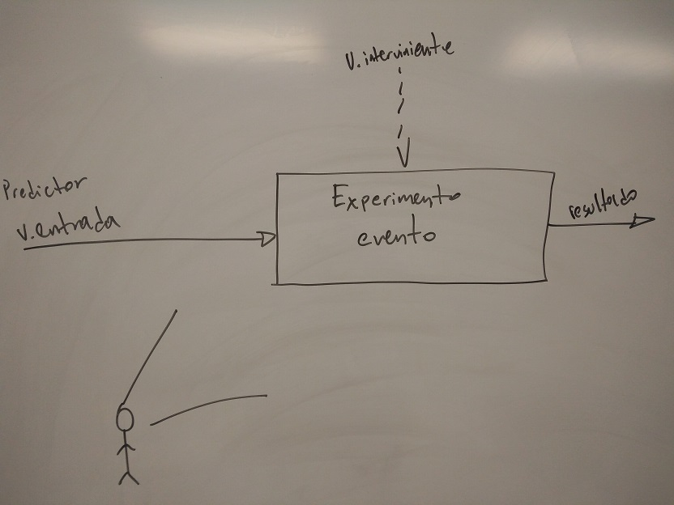

Capítulo 3 Recolección de Datos
3.1 Definiciones
- Datos: colección de información sobre las variables de interés.
Para poder tener una colección habrá que definir la población de donde saldrán éstos datos: - Población: Conjunto de datos, objetos, humanos, experiencias, étc.
- Población infinita: Aquella que no se puede o es difícil de contar. (población difícil o no contable)
- Población finita: se puede contar y/o medir.
- Población muestreada: subconjunto de la población que reúne todas las características (parámetros) de la población.
- Parámetro: unidad de medida de los atributos, características de la población.
- Muestra: Subconjunto de la población.
- Estadísticos: unidad de medida de un atributo o característica de la muestra.
- Censo: cuando la población se analiza en su totalidad.
3.1.1 Tipos de Muestreo
- Muestreo aleatorio simple: muy difícil de lograr.
Errores que arruinan el muestreo aleatorio simple (buscar evitarlos siempre):- Tendencias.
- Prejuicios.
- Parcialidades.
- Muestreo estratificado por capas/niveles:Se divide la población por atributos o alguna característica y de ese estracto se realiza el estudio.
- Multistage Cluster Sampling/ Muestreo de cluster multiestado: Estructurado en árbol, las “unidades” son diferente en cada estrato.

- 1-in-\(k\) systematic sampling/ muestreo sistemático 1-en-\(k\): Consiste en seleccionar cada \(k\)-ésima unidad. Útil para muestreo de artículos en líneas de producción.
Ejemplos:
Muestreo con reemplazo:
En un lote de 1000 artículos. Agarro 20 al hazar, si \(\leq 4\) están defectuosos, acepto el lote.
Muestreo sin remplazo:
Después de sacar 20, vuelvo a muestrear a los 980 restantes (con ésta técnica la muestra aumenta, dado que \(\Omega\) disminuye y la cantidad de artículos defectuosos siguen siendo los mismos en cantidad) \(\therefore\)
Tomo 30 artículos, si \(\leq 4\) resultan defectuosos entonces rechazo el lote.
3.1.2 Tipos de Estudios
- Estudio observacional:

- Estudio experimental:

Recordar el concepto de efecto placebo, para evitar éste efecto se utilizan grupos control en los estudios.